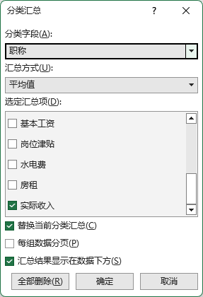
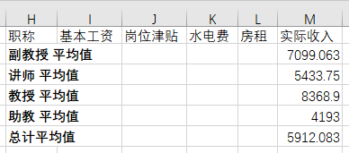
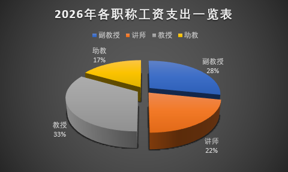
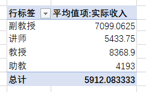

数据分析
Data Analysis
- 单击下载 实验数据
- 操作"工资收入"工作表，完成以下内容
- 分类汇总
- 根据职称统计平均工资
- 先排序/分类再汇总
- 按照"职称编码"或"职称"排序
- 点击"分类汇总"
- 分类字段选择"职称"
- 汇总方式选择"平均值"
- 汇总项选择"实际收入"
- 其它保持默认并确定
- 单击左侧1、2、3，查看不同汇总级别的数据

分类汇总

分类汇总
- 数据可视化
- 创建图表，对结果数据可视化
- 先处理数据再创建图表
- 点击汇总级别"2"，仅显示汇总数据
- 隐藏不需要的数据列
- 框选汇总数据；不需要标题，复制可见单元格
- 定位鼠标在当前数据区域，"插入" → "饼图" → "三维饼图"
- 编辑标题：2026年各职称工资支出一览表
- "+" → 增加"数据标签"，并调整数据标签在外
- 调整"图例"到"顶部"
- 右键单击绘图区域的数据标签 → "设置数据标签格式" → "百分比"
- 右键单击绘图区域的数据系列 → "设置数据系列格式" → "饼图分离" → 10%
- 为饼图应用"图表样式"中的"样式7"
- 使用"移动图表"将饼图移动到新工作表"学历结构饼图"

三维饼图
-
充分利用图表的动态选项卡设置图表
Ctrl + 1 打开格式设置
- 数据分析
- 使用透视表分析数据
、
- 更方便
- 更强大
- 取消分类汇总会重新复制一份数据
- 在当前数据报插入透视表
- 行：职称
- 值：实际收入 → 平均值

透视表